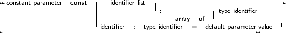

In addition to variable parameters and value parameters Free Pascal also supports Constant parameters. A constant parameter as can be specified as follows:
_________________________________________________________________________________________________________Constant parameters

___________________________________________________________________
A constant argument is passed by reference if its size is larger than a pointer. It is passed by value if the size is equal or is less then the size of a native pointer. This means that the function or procedure receives a pointer to the passed argument, but it cannot be assigned to, this will result in a compiler error. Furthermore a const parameter cannot be passed on to another function that requires a variable parameter. The main use for this is reducing the stack size, hence improving performance, and still retaining the semantics of passing by value...
Constant parameters can also be untyped. See section 11.4.2, page 436 for more information about untyped parameters.
As for value parameters, constant parameters can get default values.
Open arrays can be passed as constant parameters. See section 11.4.5, page 441 for more information on using open arrays.